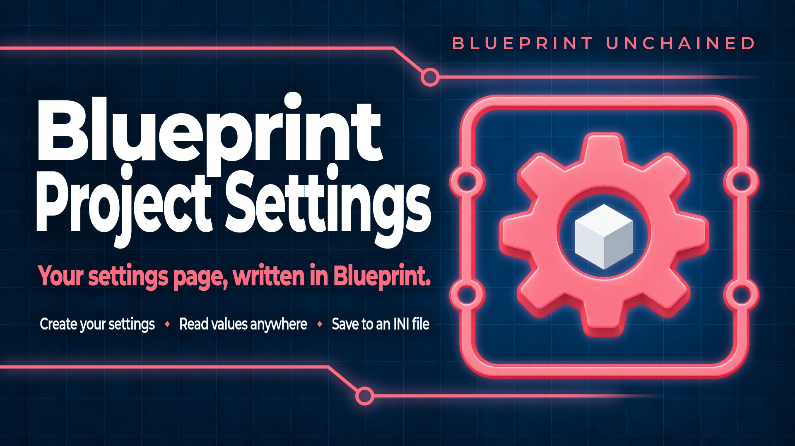
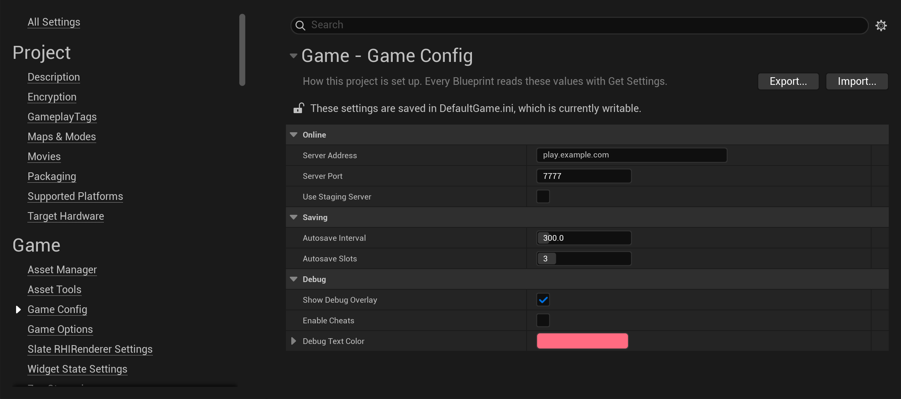
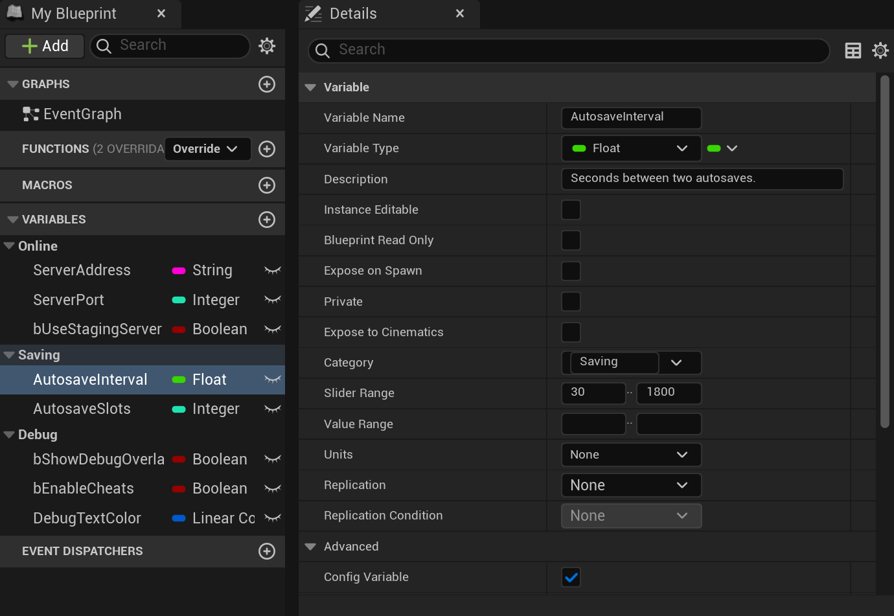
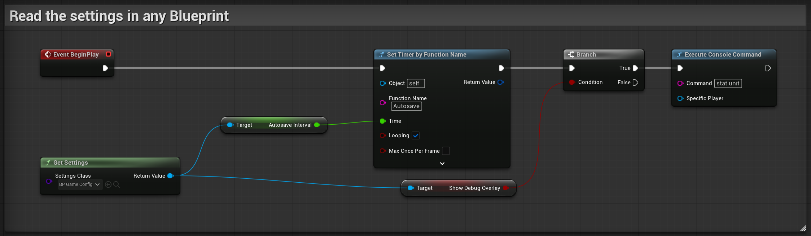
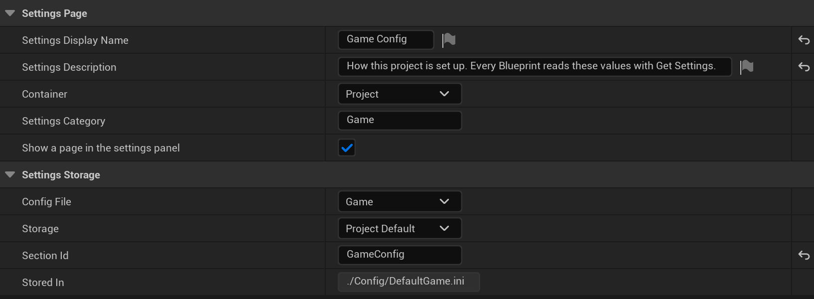
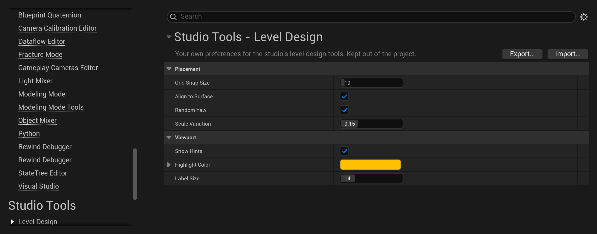
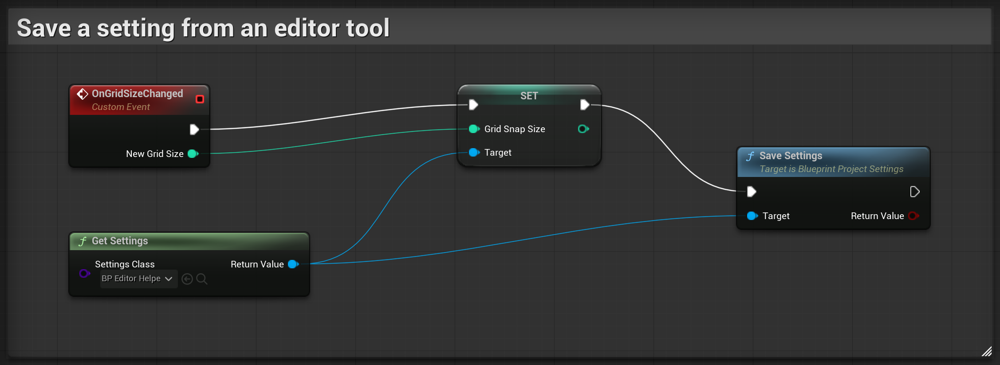

Some values belong to a whole project rather than to any actor or level in it: the address of the server your game connects to, how often it autosaves, a switch for the debug overlay, the options of a system you reuse from game to game. Others belong to the editor: the preferences of your Editor Utility Widgets and in-house tools. Unreal Engine keeps both kinds on a settings page — Project Settings for the project, Editor Preferences for the editor — and stores every value in an ini file. A page of your own there normally takes a C++ class deriving from UDeveloperSettings.
Blueprint Project Settings makes that page from a Blueprint. The variables you add to a settings Blueprint become a page in Project Settings or Editor Preferences, with the values you gave them. The values are stored in ini files, the way the engine stores its own settings, and any Blueprint reads them with one node: Get Settings.

Your first settings page builds that page step by step, and it is all most projects need. What the ini files give you, pages for your editor tools, saving from a Blueprint and what happens in a packaged game come after it, under Beyond the basics.
The example is a page called Game Config, holding how a small online game is set up: where it connects, how it saves, and what a development build shows.
Enable Blueprint Project Settings in Edit > Plugins and restart the editor when it asks.
In the Content Browser choose Add > Blueprint > Blueprint Project Settings. Keep Blueprint Project Settings as the parent class and name the new asset BP_GameConfig.
Open BP_GameConfig and add a variable for each value, the way you would in any Blueprint. Then, in each variable's details, tick Config Variable under Advanced. That checkbox is the engine's own, and it is what marks a variable as a stored setting.
| Variable | Type | Category | Default value |
|---|---|---|---|
| ServerAddress | String | Online | play.example.com |
| ServerPort | Integer | Online | 7777 |
| bUseStagingServer | Boolean | Online | unticked |
| AutosaveInterval | Float | Saving | 300 |
| AutosaveSlots | Integer | Saving | 3 |
| bShowDebugOverlay | Boolean | Debug | ticked |
| bEnableCheats | Boolean | Debug | unticked |
| DebugTextColor | Linear Color | Debug | a red |
The rest of a variable's details works as it does on any Blueprint, and it shapes the page: Category groups the rows, Description is what hovering a row says, and Slider Range gives a number a slider. Set the default values in Class Defaults, or as each variable's Default Value.

In Class Defaults, under Settings Page, set Settings Display Name to Game Config and write a sentence in Settings Description — it is shown under the page's title. Settings Category is the group the page is listed under in Project Settings. Game is the default, and a name of your own creates a group.
Left empty, the page is named after the Blueprint. Nothing under Settings Storage needs to change: by default the values are stored in the project's Config/DefaultGame.ini, which is where a project's own settings belong.
The page is in Project Settings > Game > Game Config straight away: your variables, in their categories, with the values you set.
A value changed on the page is written to Config/DefaultGame.ini, the file the engine keeps its own game settings in, under a section of the settings' own — one line per value:
``ini [BP_GameConfig] ServerAddress=play.example.com ServerPort=7777 bUseStagingServer=False AutosaveInterval=600.000000 AutosaveSlots=3 bShowDebugOverlay=True bEnableCheats=False DebugTextColor=(R=1.000000,G=0.147027,B=0.219526,A=1.000000) ``
The file is checked in with the project, and it ships with the game. The values in Class Defaults stay what the Blueprint was authored with: the page's Reset to Defaults button goes back to them.
In any graph, add Get Settings and pick BP_GameConfig in its Settings Class pin. The node returns your Blueprint's own type, so its variables can be dragged straight off Return Value — there is no cast.
The game mode below starts its autosave timer at the interval set on the page, and turns the frame timings on when Show Debug Overlay is ticked:

There is exactly one settings object per settings Blueprint, and every node reads and writes that same object. That is why nothing has to be spawned, kept in a variable or passed around, and why Get Settings needs no world and no game instance. It works in any Blueprint — an actor, a widget, a game mode, an Editor Utility Widget, an Animation Blueprint — at any time, and the stored values are already in it before any Blueprint runs.
That is the whole setup.
Nothing is stored in a format of the plugin's own. The values of a settings Blueprint are lines in the engine's ini files, beside the engine's own settings, and that is worth more than a place to keep them:
Config/UserGame.ini, which is not checked in, and a platform can override one in its own ini — Config/Android/AndroidGame.ini for Android — exactly as for the engine's own settings.Two choices decide it, and they are independent.
Config File is which ini file. Game is the usual answer for a project's own settings. Engine and Input exist for settings that belong beside the engine's own, and the two editor files for the settings of the editor itself — see Pages for your editor tools. Custom gives the settings a file of their own, named by the project.
Storage is which copy of that file a save writes to.
| Storage | File | Who it belongs to |
|---|---|---|
| Project Default | Config/DefaultGame.ini | The project. Checked in, shipped with the game, the same for everyone. |
| Project User | Config/UserGame.ini | One developer working on the project. Not checked in. |
| Global User | The user settings directory | One developer, across every project on the machine. |
| Saved | Saved/Config/<Platform>/Game.ini | This installation. The copy a running game may write. |
Project Default is the one a project's settings want: it is checked in, the same for everyone, and it ships with the game. It is a design-time value, though. The file belongs to the project's Config directory, which is source rather than part of the installed game, so a packaged build asking to save one is refused rather than writing somewhere nothing will read back; the refusal is reported in the log and Save Settings returns false. The two editor files exist only in the editor, and a packaged game refuses to save to them the same way. Of the four copies, Saved is the only one an installed game can write.
Stored In, under Settings Storage in Class Defaults, shows the file the two choices add up to.

Editor tools have settings too: the folder an exporter writes to, the grid a placement tool snaps to, the colour it highlights with. Set Container to Editor Preferences and the page is listed there instead of in Project Settings, under any group you name — one of your own included.

Which file those settings go in decides who shares them:
Config/DefaultEditor.ini, checked in with the project.An Editor Utility Widget or an editor script reads them with Get Settings, like any other Blueprint. The editor's ini files exist only in the editor, so these settings are for the editor alone: a packaged game does not read them.
The settings page saves what is changed on it. A Blueprint that sets a value itself saves it with Save Settings, into the file and the copy the settings Blueprint chose:
The graph below is an editor tool keeping its own option: when the grid size is changed in the tool's window, it is stored in the Level Design settings, for this developer alone.

Save Settings returns false when nothing was written, and the log says why — see Where the values are stored. A running game saves the same way, into the one copy an installed game can write: set Storage to Saved for settings the game itself changes.
To discard changes that were not saved, call Reload Settings. It starts from the values the Blueprint was authored with and reads the stored ones over them, so a change to a value that was never saved is discarded as well.
Values are stored under a section name, and by default the engine uses the generated class's path — [/Game/Settings/BP_GameConfig.BP_GameConfig_C]. Moving or renaming the asset changes that name, and every stored value is orphaned with no error anywhere.
Set Section Id in Class Defaults and the values are filed under that name instead. Choose it once, before the first release, and the asset can be moved and renamed afterwards without losing a stored value.
Left empty, the section is the Blueprint's name without the generated class suffix, which already survives the asset being moved but not renamed. A slash in Section Id is stored as a dot.
Two settings Blueprints stored under the same section read and overwrite each other's values — two assets with the same name and no Section Id, or a Blueprint that inherits its parent's Section Id instead of setting one of its own. The log warns when that happens.
Container puts the page in Project Settings or in Editor Preferences. Settings Category is the group it is listed under — Game, Engine, Plugins, Editor, or a name of your own, which creates a group. Settings Display Name and Settings Description are the title and the sentence under it; left empty they fall back to the Blueprint's own name and description.
The page shows the variables you added and nothing else. The choices that built the page are authored in Class Defaults and deliberately absent from the page itself. A change made on the page is saved the way Save Settings saves it, to the file and copy the Blueprint chose, and the page's Reset to Defaults button is the same reset as the node.
A value set on the page is a setting, not a default. The defaults are what you set in the Blueprint's Class Defaults, or as a variable's Default Value, and saving the Blueprint writes those — never the values stored on your machine, whatever the page or a running game has set since. A duplicate of the Blueprint starts from the same defaults.
Untick Show a page in the settings panel to keep the values working everywhere while the page is not listed.
Reset Settings To Defaults restores the values the Blueprint was authored with — its class defaults as they were loaded, before anything stored was applied over them, and as edited in Class Defaults since — not the last thing saved. The stored copy is rewritten to match, so nothing comes back on the next run. The Reset to Defaults button on the settings page does the same.
It returns false when there is nothing to restore, which is the case for a settings class written in C++: its class defaults read the stored values while they are built, so what it was authored with is never seen. It also returns false when the reset could not be written — for any of the reasons Save Settings gives — and the values are then reset for this session only.
A settings Blueprint can implement two events:
On Settings Changed is a delegate on the settings object, so a widget can bind to it and follow a value without polling.
Save Config Variables and Reload Config Variables work on any object whose class has config variables — the engine's own Config Variable checkbox, on any Blueprint, not only on a settings class. They are the write half the engine never exposed.
Nothing in a project references a settings Blueprint, and the cooker keeps only what is referenced, so without help a settings class would work in the editor and simply be missing from the packaged game. The plugin adds the settings Blueprints it finds to the cook.
A cook writes the values each Blueprint was authored with, not the ones stored on the machine that cooks it — whether the build is cooked from the editor or by a build script.
Which ones it finds is under Project Settings > Plugins > Blueprint Unchained — Project Settings. The search covers every mounted content root by default, or the paths you list. Additional Settings Classes names classes to configure regardless — for settings that arrive in downloadable content, or a project that would rather keep the search off.
Check Show a page in the settings panel, and that the Blueprint compiles. A settings Blueprint that has never been compiled has no generated class for the plugin to find. Check Container too: it decides whether the page is in Project Settings or in Editor Preferences.
Pick the settings Blueprint in the Settings Class pin itself. The node takes its return type from the class picked there, or from the type of a wire plugged into the pin — and a wire typed as any Blueprint Project Settings class returns a Blueprint Project Settings, which has none of your variables until it is cast.
Check that the variables have Config Variable ticked. A settings Blueprint without a single config variable has nothing to store, and the log says so.
Check that the settings Blueprint is inside one of the search paths, or listed under Additional Settings Classes. If automatic discovery is off, only the listed classes are configured.
Check Storage. Project Default cannot be written by an installed game and is refused; the log says so. Use Saved for settings the game itself changes. Check Config File too: the two editor files do not exist in a packaged game.
The values were filed under the asset's old path. Set Section Id so the section is a name you chose rather than a path, and move the stored values to that section by hand once.
It returns false when the class has no recorded defaults, which is the case for a settings class written in C++, and when the reset could not be saved. Check the log for the warning naming the class.
Questions and bug reports: tomasz.klin@gmail.com.
Include the engine version and the plugin version - this manual documents 1.0.0 - plus the storage mode and the config file when they are relevant.